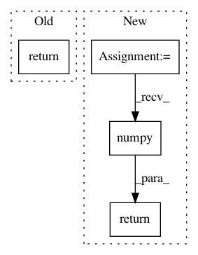

4e2d8cd89163c0fd4b4e14e4f3d13b58d7e3b29f,examples/nas/naive-tf/train.py,,accuracy,#Any#Any#,56
Before Change
bs = target.shape[0]
predicted = tf.cast(tf.argmax(output, 1), target.dtype)
target = tf.reshape(target, [-1])
return sum(tf.cast(predicted == target, tf.float32)) / bs
if __name__ == "__main__":
cifar10 = tf.keras.datasets.cifar10
After Change
def accuracy(truth, logits):
truth = tf.reshape(truth, -1)
predicted = tf.cast(tf.math.argmax(logits, axis=1), truth.dtype)
equal = tf.cast(predicted == truth, tf.int32)
return tf.math.reduce_sum(equal).numpy() / equal.shape[0]
def accuracy_metrics(truth, logits):
acc = accuracy(truth, logits)
return {"accuracy": acc}
In pattern: SUPERPATTERN
Frequency: 3
Non-data size: 4
Instances
Project Name: microsoft/nni
Commit Name: 4e2d8cd89163c0fd4b4e14e4f3d13b58d7e3b29f
Time: 2020-10-18
Author: 40699903+liuzhe-lz@users.noreply.github.com
File Name: examples/nas/naive-tf/train.py
Class Name:
Method Name: accuracy
Project Name: AKSHAYUBHAT/DeepVideoAnalytics
Commit Name: 5e82853bb435e7c46e2e3bafa2c1d0a4c40ffb38
Time: 2017-02-03
Author: AKSHAYUBHAT@GMAIL.COM
File Name: dvalib/indexer.py
Class Name: BaseIndexer
Method Name: apply
Project Name: keras-team/keras
Commit Name: 4d857be62bbeabf1ba6374492d13d63a097891ed
Time: 2019-03-05
Author: francois.chollet@gmail.com
File Name: keras/backend/tensorflow_backend.py
Class Name:
Method Name: get_value